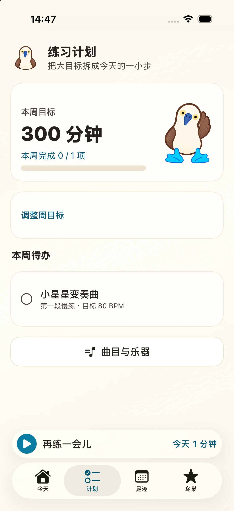
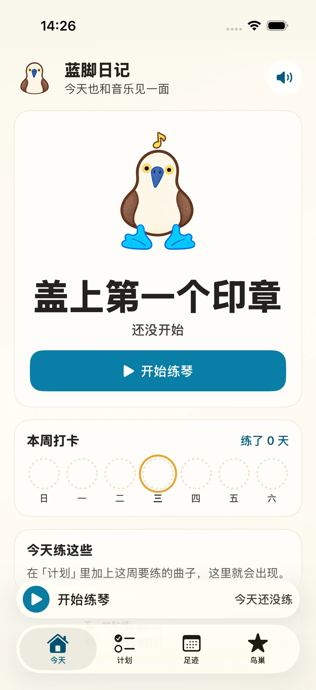
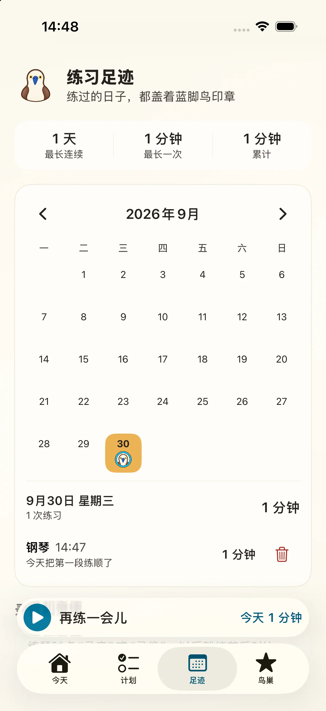
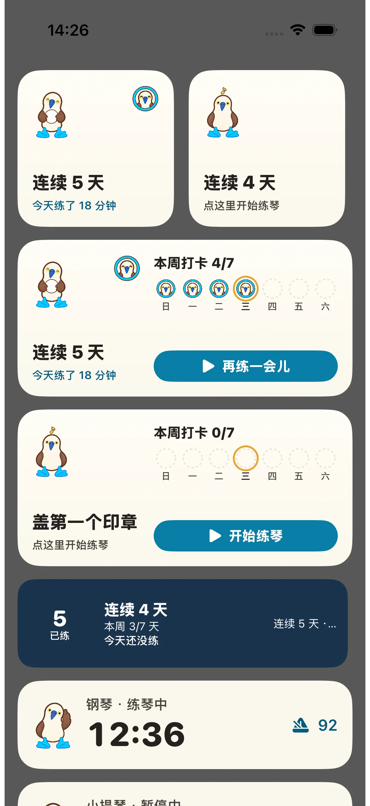

把这周的曲子排好
添加曲目与乐器，写下本周练习内容，设定周目标。保存后，曲目会进入本周待办，也会出现在「今天」页。

给孩子的练琴手账
先选喜欢的乐器，练 1 分钟，盖上第一个印章。从今天要练的曲子到每一次回看，蓝脚鸟陪你按自己的节奏前进。
从第一分钟开始为 iPhone 设计 · 无需账号 · 记录保存在本机


第一次打开，就能开始
蓝脚鸟先来打招呼。选好乐器，就能直接打开练琴台；练完保存，第一枚印章会出现在你的日记里。
图片来自当前版本 iPhone 17 Pro 模拟器的首次使用流程。
一段自然的练琴时间
添加曲目与乐器，写下本周练习内容，设定周目标。保存后，曲目会进入本周待办，也会出现在「今天」页。

计时器、可调 BPM 与拍号的节拍器、录音、录像、心得和保存按钮都在同一屏。暂停练习时，节拍器也会停。
「足迹」日历标出练习日期，点进当天能查看时长和每次记录；有多种乐器时，也可以只看其中一种。录音、录像能从这里回放。

练琴以外，也记得你
主屏与锁屏小组件能看到练习的印章和连续天数；练琴时，计时与节拍器速度也能显示在锁屏和灵动岛。

App 内样式预览 · 演示数据 ↗小组件展示今天练了多久、本周印章；想继续时，点一下回到练琴台。
开始练习后，实时活动显示计时、暂停状态和节拍器速度，保存或取消后结束。
App 界面已加入简体中文、繁体中文和英文；这些记录仍只保存在自己的设备上。
给孩子留一块自己的空间
蓝脚日记没有账号、家长监控或排行榜。练习记录、曲目和待办保存在这台 iPhone；录音与录像也留在本机。核心练习无需联网，只有主动使用在线曲目目录搜索时才需要网络。
蓝脚日记 · iPhone
下载入口将在 iPhone 版开放时更新。